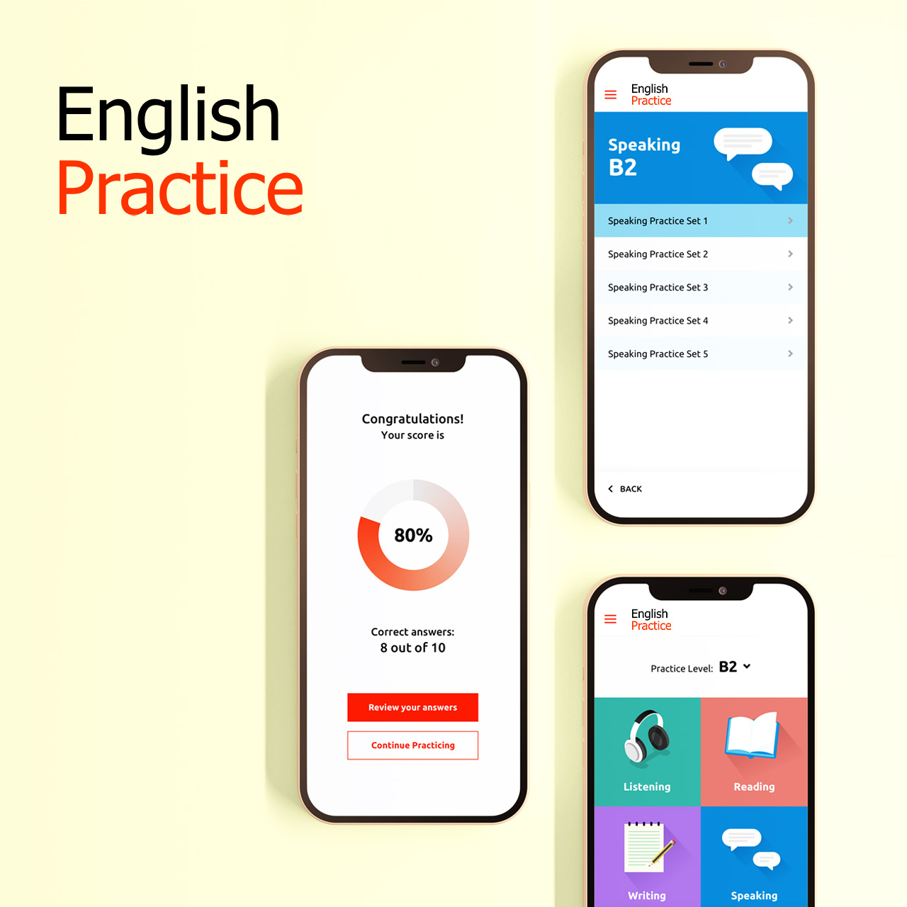
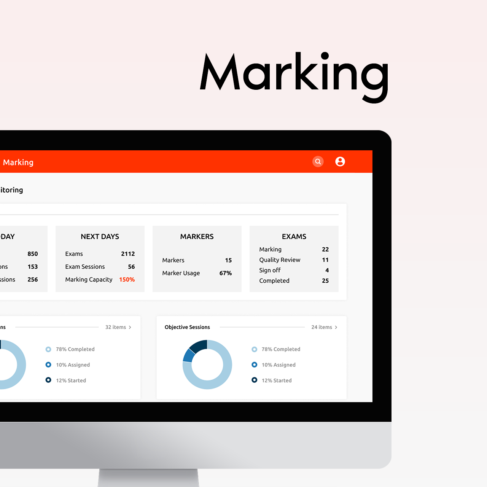

EnglishPractice
Mobile app
EnglishPractice is a mobile application providing users preparation material to help them improve their English skills, simulating the actual Listening, Reading, Writing & Speaking exams.
 User flowMarking
Web app
A handoffs system that consists of several roles, in order for them to complete the marking process. Each role can monitor their individual data, KPI, reports, reviews, etc. Markers collect exam data from test takers and complete marking for the exam sessions they are assigned to. Exam administrators can evaluate or monitor markers and data, assigning them exams to work on, test cheating reviews, etc.
 User flowBook English Exams
Booking microsite
Booking microsite for English exams regarding British Visas. The candidate can select the exam type they want, search for a test centre, check for date and time availability and finally book and pay for their exam. According to the specs, the microsite is accessibility compliant due to Web Content Accessibility Guidelines (WCAG 2.0).
Live site